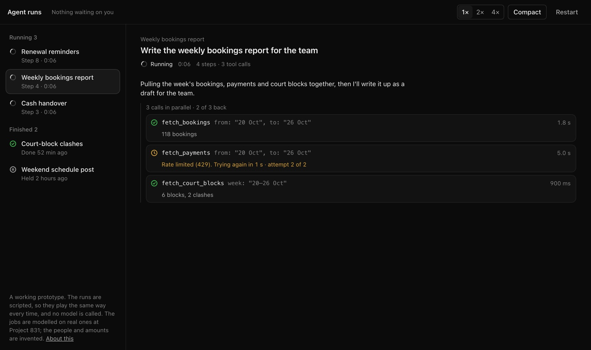
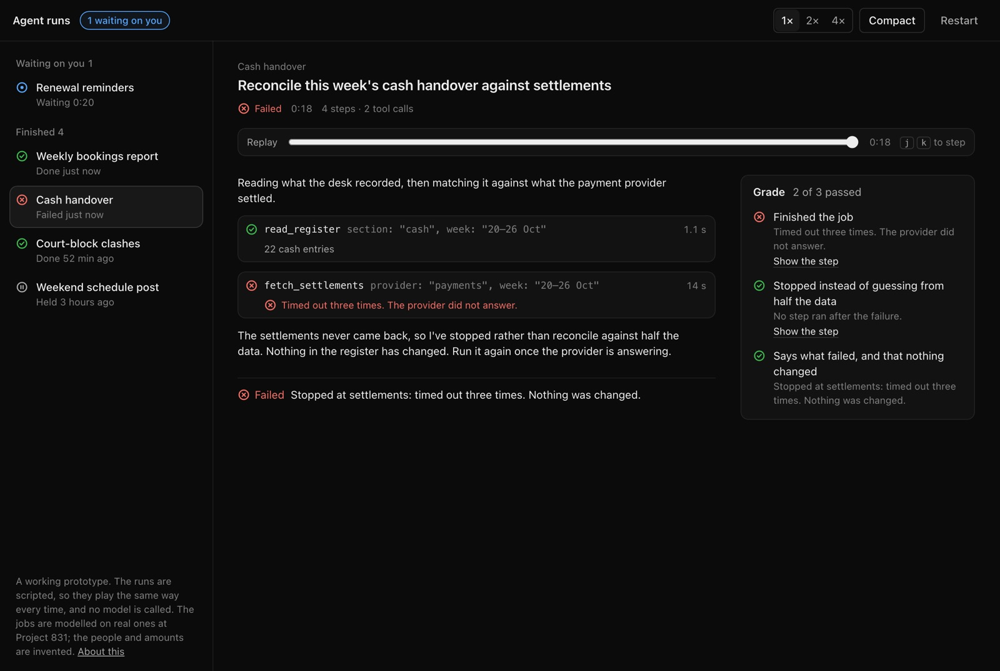
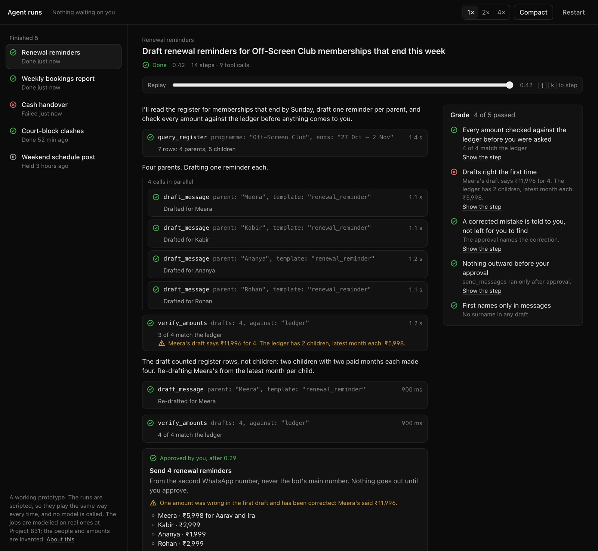
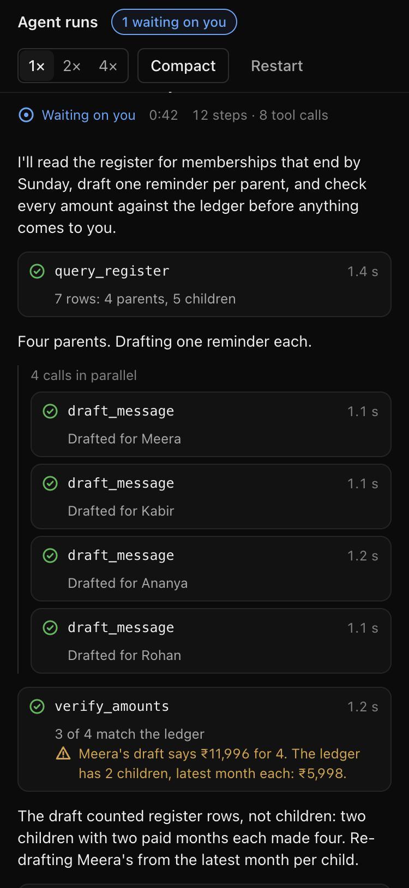

One glance at a long agent run
An agent run is long, it talks while it works, it calls tools that fail, and sometimes it has to stop and ask a person. Agent runs is a working prototype of the interface for that: one list of runs, one run up close, and a replay that grades it.
The captain taught me that an agent you can't see is one you won't trust. This is the close-up the captain's board doesn't have: every state a run can be in, said in words, and the one that needs you put first.

What needs you comes first
The list is in three groups: waiting on you, running, finished. A run that needs a decision moves to the top, and the bar says how many are waiting from any screen. Each row says where the run is in plain words: "Waiting 0:47", "Step 6 · 0:22", "Failed just now". Every status is an icon and a word together, never colour alone.
The first version of the captain was a table of statuses, and I had to read every row to find out if anything was wrong. Here you read one line.
Every state, in words
A model is slow, it streams, and it fails in ordinary ways. Each of those gets a sentence, not a spinner:
- Streaming. Text arrives word by word with a caret. When a tool starts, the text closes.
- In parallel. Calls started together are drawn as one group: "3 calls in parallel · 2 of 3 back".
- Retrying. "Rate limited (429). Trying again in 3 s · attempt 2 of 2", counting down. Once it's back: "after 2 attempts".
- Long. A step that takes a while says how far it has got: "84 of 131 payments matched".
- Quiet. When nothing is running and nothing has arrived for four seconds: "No new output for 6 s. Still running; nothing has failed." In the replay, the same gap reads "8 s with no output".
- Failed. The run stops instead of guessing from half the data, and its last line says what is safe: "Nothing was changed."


Approval is a step, not a pop-up
Anything other people will see waits for a person. The card sits in the run, where the run stopped, so you can read everything that led to it before you decide. It names what goes out and where it goes from. If the agent corrected itself on the way, the card says so: a mistake fixed quietly is still a mistake you should know about. Hold ends the run, with nothing sent.
The run it plays is a real mistake. On 17 Oct the planner that writes Project 831's renewal reminders drafted one that said ₹11,996 to a parent who owed ₹5,998: it counted register rows, not children. I caught it in the review queue before it went out. The Learnings entry says the rule now: every amount is checked against the register before anyone is asked. Here the check catches it, the agent re-drafts, and the approval card names it.
A prompt is a suggestion. A gate is a guarantee. The interface should show you which one you're looking at.Review is the same run, replayed
Every view comes from one list of events: text chunks, tool starts and ends, retries, the approval and the decision. The live view folds them in as they arrive. The replay folds in the first n, so you see the run exactly as it stood at that moment, status and all. j and k step through it.
A finished run is graded against a rubric, the way the captain's evals are. Each check points at the step where it was decided, so "Drafts right the first time: failed" takes you to the call that found ₹11,996. The renewal run scores 4 of 5: it ended right, but its first draft was wrong, and the grade says both.

A small design system under it
No component library. The system is a set of tokens and a handful of parts, written down at the top of the token file: two text sizes and one heading size, three weights, three greys, four status colours that always ship with an icon and a word, a spacing scale, two motion durations. A compact density tightens the same layout for people who live in it all day.
Motion only where state changed: the caret, the spinner, a progress bar. Under reduced motion, none of it moves. A screen reader hears a run change state ("Renewal reminders: waiting on you"), never every streamed word. It works at phone width, and there is no horizontal scroll.

What it is not
It is a prototype, and it says so on the page. The runs are scripted so they play the same way every time; no model is called. With a real runtime, the next things to design are the ones a script can't fake: cancelling a run halfway, picking a run back up after a reload, and showing cost and latency next to each call without making every row louder.